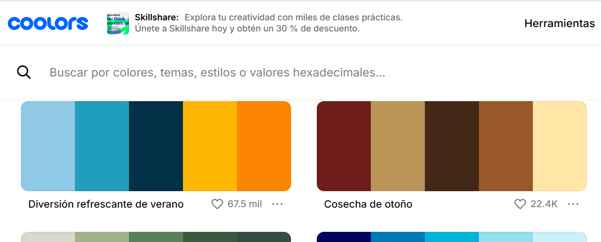

index.html
Archivo principal que carga estilos, scripts y organiza la web.
Archivo principal que carga estilos, scripts y organiza la web.
Aquí van base.css, layout.css y components.css para la maquetación.
Carpeta para páginas secundarias (UD1, UD2…).
Iconos en SVG o PNG para reutilizar.
Imágenes generales del proyecto.
Archivos de audio o vídeo.
Además de crear carpetas y archivos desde el explorador de VS Code, puedes usar la CMD (símbolo del sistema) en Windows.
Pasos básicos:
mkdir pagescd pagesecho.> estructura.html
echo.> etiquetas.html
echo.> gridflex.html
Con mkdir creas carpetas y con echo.> creas archivos vacíos en CMD.
Las migas de pan son un sistema de navegación secundaria que muestra al usuario dónde se encuentra dentro de la estructura del sitio. Mejoran la usabilidad porque permiten:
🔎 Ejemplo en HTML:
<nav aria-label="Breadcrumb">
<ol>
<li><a href="index.html">Inicio</a></li>
<li><a href="cursos.html">Cursos</a></li>
<li>HTML y CSS</li>
</ol>
</nav>
El usuario verá la ruta Inicio › Cursos › HTML y CSS, y podrá navegar fácilmente hacia atrás.
En CSS podemos definir variables globales de color dentro del selector
:root. Esto nos permite mantener una paleta consistente en todo el proyecto.
:root {
--color-base: #118AB2;
--color-secundario: #073B4C;
--color-sabermas:#80ffdb;
--fuente-principal: 'Arial', sans-serif;
--fuente-secundaria: 'Courier New', strong;
}
Una vez declaradas, podemos usar las variables así:
color: var(--color-base); o background: var(--color-sabermas);.
Puedes inspirarte y generar tus propios colores en Coolors — Paletas en tendencia .
Ejemplo de imagen de una paleta: Ejemplo de imagen de una paleta: < href="https://images.unsplash.com/photo-1503602642458-232111445657?w=800" target="_blank" rel="noopener"> 